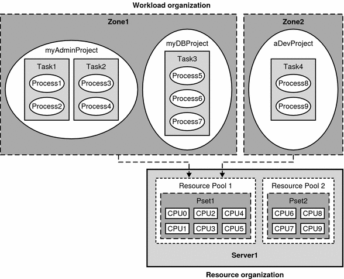

Previous
Previous
Resource Management in the Solaris Operating System
The purpose of this manual is to help developers who are writing either utility applications for managing computer resources or self-monitoring applications that can check their own usage and adjust accordingly. This chapter provides an introduction to resource management in the Solaris Operating System (OS). The following topics are included:
Understanding Resource Management in the Solaris OS
The main concept behind resource management is that workloads on a server need to be balanced for the system to work efficiently. Without good resource management, faulty runaway workloads can bring progress to a halt, causing unnecessary delays to priority jobs. An additional benefit is that efficient resource management enables organizations to economize by consolidating servers. To enable the management of resources, the Solaris OS provides a structure for organizing workloads and resources, and provides controls for defining the quantity of resources that a particular unit of workload can consume. For an in-depth discussion of resource management from the system administrator's viewpoint, see Chapter 1, Introduction to Solaris Resource Manager, in System Administration Guide: Solaris Containers-Resource Management and Solaris Zones.
Workload Organization
The basic unit of workload is the process. Process IDs (PIDs) are numbered sequentially throughout the system. By default, each user is assigned by the system administrator to a project, which is a network–wide administrative identifier. Each successful login to a project creates a new task, which is a grouping mechanism for processes. A task contains the login process as well as subsequent child processes.
For more information on projects and tasks, see Chapter 2, Projects and Tasks (Overview), in System Administration Guide: Solaris Containers-Resource Management and Solaris Zones for the system administrator's perspective or Chapter 2, Projects and Tasks for the developer's point of view.
Processes can optionally be grouped into non-global zones, which are set up by system administrators for security purposes and to isolate processes. A zone can be thought of as a box in which one or more applications run isolated from all other applications on the system. Non-global zones are discussed thoroughly in Part II, Zones, in System Administration Guide: Solaris Containers-Resource Management and Solaris Zones. To learn more about special precautions for writing resource management applications that run in zones, see Chapter 7, Design Considerations for Resource Management Applications in Solaris Zones
Resource Organization
The system administrator can assign workloads to specific CPUs or defined groups of CPUs in the system. CPUs can be grouped into processor sets, otherwise known as psets. A pset in turn can be coupled with one or more thread scheduling classes, which define CPU priorities, into a resource pool. Resource pools provide a convenient mechanism for a system administrator to make system resources available to users. Chapter 12, Resource Pools (Overview), in System Administration Guide: Solaris Containers-Resource Management and Solaris Zones covers resource pools for system administrators. Programming considerations are described in Chapter 6, Resource Pools.
The following diagram illustrates how workload and computer resources are organized in the Solaris OS.
Figure 1-1 Workload and Resource Organization in the Solaris Operating SystemResource Controls
Simply assigning a workload unit to a resource unit is insufficient for managing the quantity of resources that users consume. To manage resources, the Solaris OS provides a set of flags, actions, and signals that are referred to collectively as resource controls. Resource controls are stored in the /etc/project file or in a zone's configuration through the zonecfg command described in zonecfg(1M). The Fair Share Scheduler (FSS), for example, can allocate shares of CPU resources among workloads based on the specified importance factor for the workloads. With these resource controls, a system administrator can set privilege levels and limit definitions for a specific zone, project, task, or process. To learn how a system administrator uses resource controls, see Chapter 6, Resource Controls (Overview), in System Administration Guide: Solaris Containers-Resource Management and Solaris Zones. For programming considerations, see Chapter 5, Resource Controls.
Extended Accounting Facility
In addition to the workload and resource organization, the Solaris OS provides the extended accounting facility for monitoring and recording system resource usage. The extended accounting facility provides system administrators with a detailed set of resource consumption statistics on processes and tasks.
The facility is described in depth for system administrators in Chapter 4, Extended Accounting (Overview), in System Administration Guide: Solaris Containers-Resource Management and Solaris Zones. The Solaris OS provides developers with both a C interface and a Perl interface to the extended accounting facility. Refer to Chapter 3, Using the C Interface to Extended Accounting for the C interface or Chapter 4, Using the Perl Interface to Extended Accounting for the Perl interface.
Writing Resource Management Applications
This manual focuses on resource management from the developer's point of view and presents information for writing the following kinds of applications:
Resource administration applications – Utilities to perform such tasks as allocating resources, creating partitions, and scheduling jobs.
Resource monitoring applications – Applications that check system statistics through kstats to determine resource usage by systems, workloads, processes, and users.
Resource accounting utilities – Applications that provide accounting information for analysis, billing, and capacity planning.
Self-adjusting applications – Applications that can determine their use of resources and can adjust consumption as necessary.